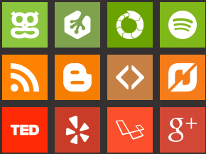
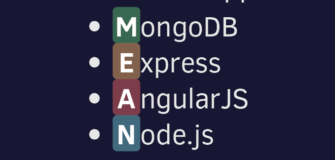

BY Hao Ju Zheng
github: https://github.com/hjzheng
A font that is made for being an icon is called an “icon font”. Use the CSS 3 @font-face as the Web Font to call.
A JavaScript runtime
PayPal, LinkedIn, Yahoo, Microsoft, eBay, 37signals, LearnBoost, Yammer, Walmart
Popular stack for building Node.js based web apps.
You can change the size of the browser window or use chrome dev tools simulator, to simulate the different size of equipment, experience what is the response web design。